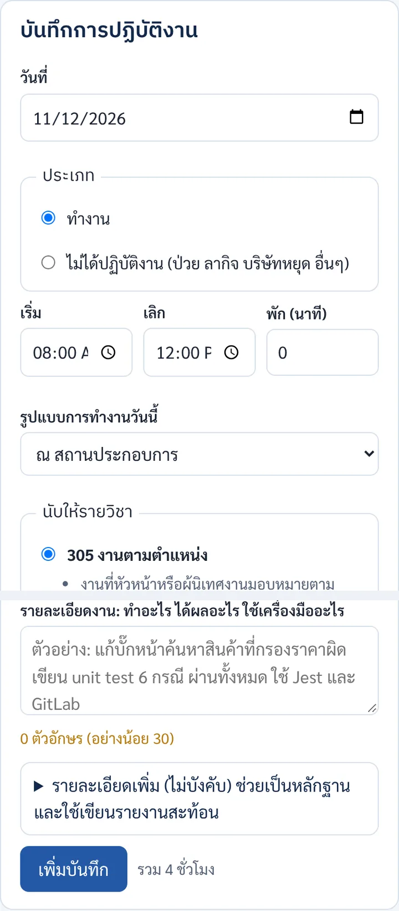
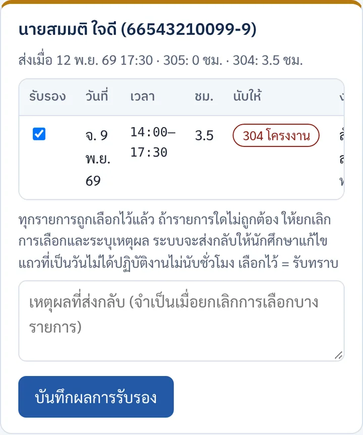
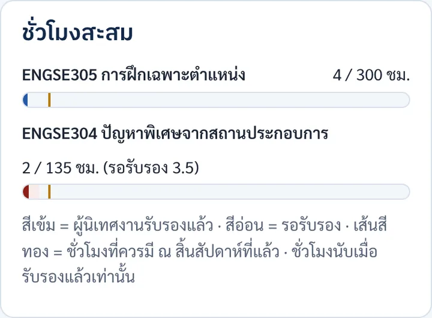

เส้นทางระหว่างภาคถึงจบภาค
ตั้งแต่วันเปิดภาคจนส่งผลการเรียน: วงรอบ logbook รายสัปดาห์ งานที่ต้องส่ง การนิเทศ และการประเมินของแต่ละช่วง

ฉบับ 1.1 · 14 พฤศจิกายน 2569 · ภาพหน้าจอทุกภาพใช้ข้อมูลสมมติ
1. ภาพรวม 16 สัปดาห์
2. ทุกสัปดาห์: วงรอบ logbook
ชั่วโมงฝึกของทั้งสองวิชามาจาก logbook ที่ผู้นิเทศงานรับรองแล้วเท่านั้น ทำซ้ำแบบนี้ทุกสัปดาห์ตลอดภาค
- 1
บันทึก logbook ในระบบ
แท็บ Logbook เลือกวันที่ ประเภท (ทำงาน หรือไม่ได้ปฏิบัติงาน) เวลาเริ่ม-เลิก รูปแบบการทำงาน และนับให้วิชาใด แล้วเขียนรายละเอียดอย่างน้อย 30 ตัวอักษร กด เพิ่มบันทึก
- 305 งานตามตำแหน่ง: งานที่ได้รับมอบหมาย ประชุมทีม งานประจำ การอบรมที่บริษัทจัด
- 304 งานโครงงาน: เก็บความต้องการ ออกแบบ เขียนโค้ด ทดสอบ ประชุมเรื่องโครงงาน เขียนรายงาน
- วันที่ป่วย ลากิจ หรือบริษัทหยุด เลือก ไม่ได้ปฏิบัติงาน แล้วระบุเหตุ (ไม่นับชั่วโมง)
- แนบลิงก์ รูป ปัญหา และสิ่งที่ได้เรียนรู้ได้ ไม่บังคับ แต่ช่วยเป็นหลักฐานและใช้เขียนรายงานสะท้อน
- คะแนน
- logbook 15% ของ ENGSE305 และเป็นหลักฐานให้คะแนนส่วนอื่น
- อ่านเพิ่ม
- logbook และการนับชั่วโมง · เกณฑ์ 15 คะแนน

ฟอร์มบันทึกการปฏิบัติงาน - 2
ผู้นิเทศงานรับรองหรือส่งกลับ
วันศุกร์ช่วงบ่าย ระบบรวมรายการของสัปดาห์ส่งให้ผู้นิเทศงานทางอีเมล ท่านเปิดลิงก์ ติ๊กรายการที่ถูกต้อง แล้วกด บันทึกผลการรับรอง ใช้เวลา 2–5 นาที
รายการที่ถูกส่งกลับจะมีเหตุผลแนบมา แก้แล้วระบบส่งให้รับรองในรอบถัดไป ถ้าจำเป็นต้องส่งเร็ว กด "ส่งให้ผู้นิเทศงานรับรองตอนนี้" ได้วันละครั้ง
สถานะรายการ: ร่าง→รอรับรอง→รับรองแล้ว หรือ ส่งกลับ
หน้าที่ผู้นิเทศงานใช้รับรอง - 3
ดูชั่วโมงสะสมเทียบกับเป้า
แถบสีเข้มคือชั่วโมงที่รับรองแล้ว สีอ่อนคือรอรับรอง เส้นสีทองคือชั่วโมงที่ควรมี ณ สิ้นสัปดาห์ที่แล้ว ถ้าต่ำกว่าเป้า กล่องสิ่งที่ต้องทำจะเตือน
ชั่วโมงที่รับรองครบ 300 ชม. (ENGSE305) และ 135 ชม. (ENGSE304) เป็นเงื่อนไขผ่านของแต่ละวิชา

การ์ดชั่วโมงสะสมในแท็บ Logbook
3. งานตามช่วงเวลา
เริ่มงานและวางแผน
- 1
รายงานตัว ปฐมนิเทศ และเริ่ม logbook
รายงานตัวที่บริษัทตามวันเวลาที่ตกลงไว้ บริษัทมอบหมายงานและแนะนำความปลอดภัยและกฎระเบียบ เข้าปฐมนิเทศออนไลน์ของหลักสูตร (ราว 2–3 ชั่วโมง) และบันทึก logbook ตั้งแต่วันแรก ผู้นิเทศงานรับรอง logbook ครั้งแรกวันศุกร์ 20 พ.ย. 69
- 2
ส่งรายงานตัวและแผนงาน 15 สัปดาห์ (SE-WIL03)
เขียนแผนงานตามตำแหน่ง 15 สัปดาห์ร่วมกับผู้นิเทศงาน ให้ท่านยืนยันคำบรรยายตำแหน่งและแผนงาน แล้วส่งตามช่องทางที่หลักสูตรประกาศ ใช้แผนนี้ตรวจว่าแท็ก 305/304 สอดคล้องกับงานจริง
- ภายใน
- วันอาทิตย์ที่ 29 พฤศจิกายน 2569
- วิชา
- ENGSE305
- 3
ส่งข้อเสนอโครงงาน (SE-WIL05)
ร่างข้อความปัญหาร่วมกับที่ปรึกษาร่วมที่บริษัท เขียนข้อเสนอโครงงานตามแม่แบบ ให้ที่ปรึกษาร่วมรับรองโจทย์ แล้วส่ง
- ภายใน
- วันอาทิตย์ที่ 6 ธันวาคม 2569
- วิชา
- ENGSE304 · ข้อเสนอโครงงาน 10%
- อ่านเพิ่ม
- โครงงาน ENGSE304
- 4
แจ้งผลพิจารณาข้อเสนอโครงงาน
อาจารย์พิจารณาข้อเสนอและแจ้งผลภายใน 1 สัปดาห์ ถ้าต้องแก้ ให้แก้ตามความเห็นแล้วส่งอีกครั้ง หลังข้อเสนอผ่าน งานที่ทำเพื่อโครงงานแท็กเป็น 304
นิเทศ ประเมินกลางภาค และความก้าวหน้า
- 5
นิเทศครั้งที่ 1 และประชุมสามฝ่าย
อาจารย์นิเทศนัดวันเข้าพบที่บริษัท (อย่างน้อย 1 ชั่วโมง) ประชุมร่วมกับผู้นิเทศงานและคุณ ส่งแฟ้มนักศึกษาก่อนวันนิเทศอย่างน้อย 7 วัน และเตรียมเล่าความก้าวหน้าทั้งงานตามตำแหน่งและโครงงาน
- คะแนน
- ENGSE305 การนิเทศและประชุมสามฝ่าย 20%
- 6
ประเมินกลางภาค และทบทวนความก้าวหน้าโครงงาน
- ENGSE305: ผู้นิเทศงานประเมินสมรรถนะกลางภาค (SE-WIL08) ผ่านลิงก์เดิมของท่าน 10%
- ENGSE304: ส่ง SRS หรือ user stories และแบบจำลองการออกแบบ กรรมการทบทวนความก้าวหน้า 15%
- 7
ส่งรายงานความก้าวหน้าโครงงาน (SE-WIL07)
ส่งรายงานความก้าวหน้าพร้อม repository หรือเดโม ช่วงสัปดาห์ 9–10 ชั่วโมง ENGSE305 ที่รับรองแล้วควรใกล้ 200 ชม. ถ้าต่ำกว่านี้ คุยกับผู้นิเทศงานและอาจารย์นิเทศ
ทดสอบ ประเมินปลายภาค และปิดภาค
- 8
วันสุดท้ายของการถอนรายวิชาโดยได้ W
ถ้ามีปัญหาที่ทำให้ฝึกต่อไม่ได้ ปรึกษาอาจารย์นิเทศและผู้ประสานงานก่อนวันนี้ ระหว่างนี้พัฒนาระบบและทำแผนกับรายงานการทดสอบ
- 9
ส่งร่างรายงานโครงงานและรายงานการทดสอบ
ส่งให้ที่ปรึกษาและที่ปรึกษาร่วม ที่ปรึกษาร่วมตรวจว่ามีเนื้อหาที่เป็นความลับของบริษัทหรือไม่ (SE-WIL11) ก่อนเผยแพร่หรือส่งฉบับสมบูรณ์
- 10
ประเมินปลายภาค รายงานสะท้อนการเรียนรู้ และสาธิตผลงาน
- ผู้นิเทศงาน: ประเมินสมรรถนะปลายภาค (SE-WIL08) 30% ของ ENGSE305
- ที่ปรึกษาร่วม: ประเมินคุณค่าผลงานโครงงาน (SE-WIL09) 20% ของ ENGSE304
- นักศึกษา: ส่งรายงานสะท้อนการเรียนรู้ (SE-WIL12) 15% และสาธิตผลงานต่อบริษัท
- 11
นำเสนอแฟ้มผลงาน สอบปากเปล่า และส่งรายงานฉบับสมบูรณ์
- ENGSE305: นำเสนอแฟ้มผลงานและแลกเปลี่ยนประสบการณ์ 10%
- ENGSE304: สอบปากเปล่าและสาธิต 15% รายงานโครงงาน 15% สิ่งประดิษฐ์ทาง SE 25%
- 12
สรุปคะแนนและส่งผลการเรียน
หลักสูตรรวมคะแนนทุกส่วนและตรวจเงื่อนไขผ่าน รวมถึงชั่วโมงที่รับรองครบ 300 และ 135 ชม. แยกเกรดของแต่ละวิชา ดูเงื่อนไขผ่านของโครงงานในหน้าโครงงาน ENGSE304
จบการฝึก
4. สรุป: งานที่ต้องส่งระหว่างภาค
| งาน | วิชา | ใครทำหรือประเมิน | ภายใน |
|---|---|---|---|
| logbook และรับรองรายสัปดาห์ | ทั้งสองวิชา | นักศึกษาบันทึก ผู้นิเทศงานรับรอง | ทุกวันทำงาน · รับรองทุกวันศุกร์ |
| รายงานตัวและแผนงาน 15 สัปดาห์ (SE-WIL03) | 305 | นักศึกษา ผู้นิเทศงานยืนยัน | วันอาทิตย์ที่ 29 พฤศจิกายน 2569 |
| ข้อเสนอโครงงาน (SE-WIL05) | 304 | นักศึกษา ที่ปรึกษาร่วมรับรองโจทย์ | วันอาทิตย์ที่ 6 ธันวาคม 2569 |
| นิเทศครั้งที่ 1 และประชุมสามฝ่าย | 305 | อาจารย์นิเทศ ผู้นิเทศงาน นักศึกษา | วันอาทิตย์ที่ 3 มกราคม 2570 |
| ประเมินกลางภาค (SE-WIL08) และทบทวนความก้าวหน้า | ทั้งสองวิชา | ผู้นิเทศงาน กรรมการ | วันอังคารที่ 12 มกราคม 2570 |
| รายงานความก้าวหน้า (SE-WIL07) | 304 | นักศึกษา | วันอาทิตย์ที่ 24 มกราคม 2570 |
| ร่างรายงานและรายงานการทดสอบ | 304 | นักศึกษา ที่ปรึกษาร่วมตรวจเนื้อหาลับ | วันอาทิตย์ที่ 14 กุมภาพันธ์ 2570 |
| ประเมินปลายภาค (SE-WIL08, SE-WIL09) และรายงานสะท้อน (SE-WIL12) | ทั้งสองวิชา | ผู้นิเทศงาน ที่ปรึกษาร่วม นักศึกษา | วันศุกร์ที่ 26 กุมภาพันธ์ 2570 |
| แฟ้มผลงาน สอบปากเปล่า รายงานฉบับสมบูรณ์ | ทั้งสองวิชา | นักศึกษา กรรมการ | วันศุกร์ที่ 12 มีนาคม 2570 |
5. ถ้าเกิดกรณีเหล่านี้
ป่วย ลากิจ หรือบริษัทหยุด
บันทึกเป็นรายการ "ไม่ได้ปฏิบัติงาน" ของวันนั้นและระบุเหตุ (กรณีป่วยระบุแค่ว่าป่วย ไม่ต้องระบุอาการ) ผู้นิเทศงานจะรับทราบในรอบรับรอง ไม่นับชั่วโมง ถ้าหยุดหลายวัน วางแผนชดเชยชั่วโมงกับผู้นิเทศงาน
ผู้นิเทศงานส่งรายการกลับ
เปิดแท็บ Logbook รายการที่ถูกส่งกลับจะมีเหตุผลแนบ แก้ให้ถูกต้อง ระบบส่งให้รับรองในรอบถัดไปเอง
ผู้นิเทศงานไม่ได้รับรองหลายสัปดาห์
เตือนท่านให้เปิดอีเมลสรุปจาก "ระบบ SE-WIL" ที่ส่งทุกวันศุกร์ ถ้าท่านไม่ได้รับอีเมล แจ้งผู้ประสานงาน ชั่วโมงที่ยังไม่รับรองจะยังไม่นับ
ชั่วโมงต่ำกว่าเป้า
ตรวจว่าบันทึกครบทุกวันและแท็กวิชาถูกต้อง ถ้ายังต่ำ คุยกับผู้นิเทศงานเรื่องตารางงาน และแจ้งอาจารย์นิเทศแต่เนิ่น ๆ อย่ารอจนใกล้หมดเขตถอน W
ไม่แน่ใจว่างานนี้ควรแท็ก 305 หรือ 304
งานเพื่อโครงงาน รวมการเตรียมข้อเสนอโครงงาน = 304 งานที่บริษัทมอบหมายตามตำแหน่ง = 305 ช่วงเดียวกันนับได้วิชาเดียว อ่านเพิ่มในหน้า logbook